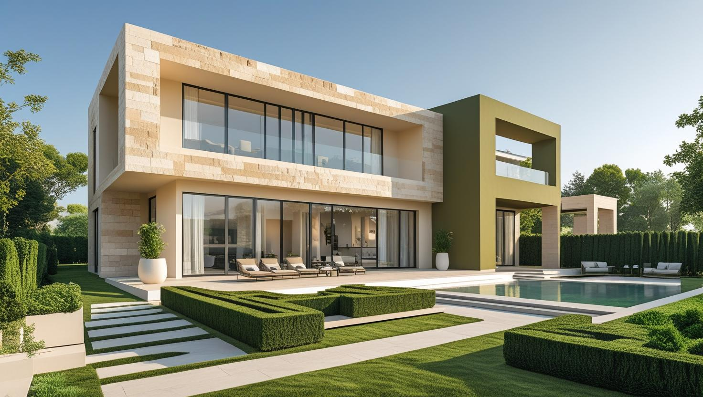

İstanbul Beykoz Profesyonel Boya Ustası
20 yıllık tecrübemizle Beykoz'da Boğaz kıyısındaki eski konutlardan Kavacık'taki site dairelerine ve orman kenarındaki müstakil evlere kadar iç ve dış cephe boyası yapıyoruz. Ücretsiz keşfin ardından yazılı teklif hazırlıyoruz.
Beykoz'da Boya Badana: Boğaz Yamacı, Müstakil Ev ve Orman Nem Etkisi
Beykoz boyacı talebi ilçenin kendine özgü yapı ve iklim koşullarından şekilleniyor. Boğaz yamacında müstakil ev ve az katlı konut, iç kesimlerde site ve apartman stoğu bulunuyor.
Ormanlık ve su kütlesine yakın konum, havadaki nem oranını ilçenin birçok noktasında yüksek tutuyor. Kuzeye bakan ve gölge alan cephelerde bu, yüzeyde küf ve yeşillenme eğilimi olarak kendini gösterebiliyor. Bu yüzeylerde temizlik ve uygun astar, boya seçiminden daha belirleyici.
Yamaçtaki adreslerde araç yanaşma ve malzeme taşıma, işin planına giren gerçek bir kalem. Beykoz boya ustası keşfinde bunu yerinde değerlendiriyoruz.
Hizmetlerimiz

İç Mekan Boyama
Beykoz'da iç cephe işleri yapı tipine göre farklılaşır: Kavacık'taki site dairelerinde düzgün yüzey ve renk seçimi, kıyıdaki eski konutlarda ise sıva çatlağı ve nem izi hazırlığı öne çıkar. Eşyalı evlerde oda oda ilerleyen bir koruma planı yapılır.
- Sıva çatlağı ve nem izi onarımı
- Tavan ve duvar boyama
- Alçı ve sıva tamiri
- Eşyalı evde oda oda uygulama

Dış Cephe Boyama
Boğaz kıyısında deniz nemi, iç kesimlerde orman gölgesi Beykoz'da dış cephe boyasının ömrünü etkiler. Uygulama; cephenin sıvalı ya da ahşap olmasına, yeşillenme ve kabarma durumuna ve iskele gerekip gerekmediğine göre planlanır.
- Kabaran ve dökülen boyanın raspası
- Yeşillenen yüzeylerin temizliği
- Dış cepheye uygun astar ve boya
- Bahçe duvarı ve saçak altı boyası

Dekoratif Boyama
Yalı ve villa salonlarında dekoratif boya, odanın ışık aldığı yöne ve ahşap ya da taş gibi mevcut detaylara göre seçilir. Vurgu duvarı ya da doku uygulaması, nem sorunu giderilmiş sağlam bir yüzey üzerine yapılır.
- Vurgu duvarı ve renk seçimi
- Taş ve tuğla efektli yüzeyler
- Kartonpiyer ve kapı boyama
- Mat ve saten bitiş seçenekleri
Fiyat Tablosu
| Hizmet Türü | Metrekare Fiyatı | Ortalama Süre (100m²) | Garanti |
|---|---|---|---|
| İç Cephe Boyama | 100-200 TL | 2-3 Gün | Uygulama kapsamına göre |
| Dış Cephe Boyama | 150-280 TL | 3-5 Gün | Uygulama kapsamına göre |
| Dekoratif Boyama | 250-500 TL | 4-7 Gün | Uygulama kapsamına göre |
| Ofis Boyama | 120-220 TL | 2-4 Gün | Uygulama kapsamına göre |
Metrekare fiyatları yaklaşık ön değerlendirme aralığıdır. Uygulanacak ölçüm yöntemi, boyanacak alanın kapsamı, yüzey durumu, tamirat ihtiyacı, kat sayısı ve malzeme seçimi keşif sırasında netleştirilir.
Dış cephe boya fiyatları uygulama alanı için yaklaşık 150–280 TL/m² aralığındadır. Kesin hesaplama yöntemi ve teklif; yüzey durumu, bina yüksekliği, erişim veya iskele ihtiyacı, tamirat kapsamı, boya sistemi ve uygulanacak kat sayısına göre keşif sırasında netleştirilir.
Uygulama kapsamına göre işçilik garantisi sağlanır. Garanti kapsamı ve istisnaları teklif veya iş sözleşmesinde belirtilir.
Bu rakamlar İstanbul Boyacılık'ın 2026 gösterge fiyat aralığıdır. Bir piyasa ortalaması değildir. Kesin fiyat; yüzey durumu, hazırlık ve tamirat miktarı, uygulanacak kat sayısı, seçilen malzeme sınıfı, ulaşım ve kat koşulları ile evin eşyalı mı boş mu olduğu keşifte görüldükten sonra belirlenir.
Beykoz'da aralığı yukarı taşıyan iki kalem var: nem ve gölge nedeniyle cephelerde çıkan temizlik ve hazırlık işi, bir de yamaç adreslerde araç yanaşma ve malzeme taşıma güçlüğü. Ulaşımı rahat ve yüzeyi sağlam adreslerde iş aralığın altında kalabiliyor.
Kanlıca, Çubuklu ve Paşabahçe'de Kıyıdaki Eski Yapıların Dış Cephe Boyası
Beykoz'un Boğaz kıyısındaki eski yapılarda dış cephe boyası, önce cephenin sıvalı mı ahşap mı olduğuna bakılarak planlanır. Deniz nemi ve rüzgâr eski boya katmanının tutunmasını zayıflattığı için bu cephelerde hazırlık çoğu zaman işin büyük bölümünü oluşturur.
- Sıvalı cephe: Kabaran ve tozuyan boya raspa edilir, sıva çatlakları onarılır; tuz ve kir izi temizlendikten sonra dış cepheye uygun astar ve boya uygulanır.
- Ahşap cephe ve doğrama: Eski katman zımparalanır ve ahşaba uygun astarla boya ya da vernik seçilir; duvar boyası ahşap yüzeyde kullanılmaz.
- Taş söve ve harpuştalar: Boyanmayacak doğal taş detaylar, uygulama boyunca bantlanarak korunur.
Kabarma ve pullanmanın ardındaki nedenleri boyanın neden döküldüğünü ve soyulduğunu anlatan rehberimizde ayrıntılı bulabilirsiniz.
Kavacık'taki Site ve Apartman Dairelerinde Boya Planı
Kavacık'taki site ve apartman dairelerinde boyanın takvimini çoğu zaman yönetimin kuralları belirler. Çalışma saatleri, asansör kullanımı ve malzemenin nereye bırakılacağı işe başlamadan netleşirse iş aksamadan ilerler.
Yönetimden önceden öğrenmeniz faydalı olan bilgiler:
- Zımpara ve raspa gibi gürültülü hazırlığın hangi saatlerde yapılabileceği
- Malzeme için hangi asansörün kullanılacağı ve kabinin nasıl korunacağı
- Ekip aracının park yeri ve site girişinde istenen bilgiler
- Boya artıkları ile ambalajların nereye bırakılacağı
Eşyalı dairelerde mobilyalar odanın ortasında toplanıp örtülür ve çalışma oda oda ilerler; böylece evin bir bölümü iş süresince kullanılabilir kalır. Kokunun içeride birikmemesi için pencerelerin açık tutulabileceği saatler de plana eklenir.
Riva ve Polonezköy'deki Müstakil Evlerde Cephe, Bahçe Duvarı ve Ahşap Bakımı
Riva ve Polonezköy gibi ormana yakın yerleşimlerdeki müstakil evlerde boya işi genellikle tek bir duvarla sınırlı kalmaz. Cephe, bahçe duvarı, saçak altı ve ahşap parçalar aynı keşifte değerlendirildiğinde bakım daha dengeli planlanır.
- Bahçe duvarı: Toprağa yakın alt kısımda nem ve kabarma daha sık görülür; bu bölüm temizlenip kuruduktan sonra boyanır.
- Saçak altı ve denizlikler: Yağış suyunun cepheye aktığı noktalarda leke ve dökülme erken başlar; boya öncesinde bu noktalar ayrıca kontrol edilir.
- Ahşap doğrama, çit ve pergola: Güneş ve yağışa açık ahşap parçalar genellikle cepheden önce yıpranır; bu yüzden cephe boyasıyla birlikte ele alınır.
Orman kenarındaki evlerde sabah çiyi ve gölge, dış cephe yüzeyinin kurumasını geciktirebilir; uygulama saatleri yüzeyin kuru olduğu zamana göre seçilir. Villa ölçeğindeki işlerde iç ve dış cephe maliyetinin nasıl ayrıldığını villa boyama fiyatları rehberimizde inceleyebilirsiniz; metrekare aralıklarını ise yukarıdaki fiyat tablosunda bulabilirsiniz.
Nemli ve Ağaçlık Çevrede Boya Sonrası Bakım
Beykoz'da cephe boyasının ömrünü uzatan şey, uygulamadan sonra cephenin düzenli kontrol edilmesidir. Küçük sorunlar erken fark edildiğinde, bütün cepheyi yeniden boyamak yerine bölgesel rötuş çoğu zaman yeterli olur.
- Yağmur olukları ve iniş boruları tıkandığında su cepheye taşar; olukların temiz tutulması cephedeki lekeleri azaltır.
- Cepheye değen dallar gölge ve nem yaratır; ağaçların cepheden uzak tutulması yeşillenmeyi geciktirir.
- Ahşap yüzeylerde çatlayan ya da matlaşan bölgeler, su alıp kararmadan rötuşlanmalıdır.
- Kışın ardından cephede kabarma ya da dökülme görürseniz fotoğrafını WhatsApp üzerinden göndererek ön değerlendirme isteyebilirsiniz.
Beykoz’da Hizmet Verdiğimiz Mahalleler
Beykoz Mahalleleri
- Acarlar Mahallesi
- Akbaba Mahallesi
- Alibahadır Mahallesi
- Anadolufeneri Mahallesi
- Anadolu Hisarı Mahallesi
- Anadolu Kavağı Mahallesi
- Baklacı Mahallesi
- Bozhane Mahallesi
- Cumhuriyet Mahallesi
- Çamlıbahçe Mahallesi
- Çengeldere Mahallesi
- Çiftlik Mahallesi
- Çiğdem Mahallesi
- Çubuklu Mahallesi
- Dereseki Mahallesi
- Elmalı Mahallesi
- Fatih Mahallesi
- Göksu Mahallesi
- Göllü Mahallesi
- Görele Mahallesi
- Göztepe Mahallesi
- Gümüşsuyu Mahallesi
- İncirköy Mahallesi
- İshaklı Mahallesi
- Kanlıca Mahallesi
- Kavacık Mahallesi
- Kaynarca Mahallesi
- Kılıçlı Mahallesi
- Mahmutşevketpaşa Mahallesi
- Merkez Mahallesi
- Ortaçeşme Mahallesi
- Öğümce Mahallesi
- Örnekköy Mahallesi
- Paşabahçe Mahallesi
- Paşamandıra Mahallesi
- Polonezköy Mahallesi
- Poyrazköy Mahallesi
- Riva Mahallesi
- Rüzgarlıbahçe Mahallesi
- Soğuksu Mahallesi
- Tokatköy Mahallesi
- Yalıköy Mahallesi
- Yavuzselim Mahallesi
- Yenimahalle Mahallesi
- Zerzavatçı Mahallesi
Beykoz Boyacı Yorumları – Gerçek Müşteri Deneyimleri
"Enes Bey'le iletişime geçtim, evimi boyattım. Hiç boya dökülmeden tertemiz çalışıldı. Herkese tavsiye ederim."
Suat Aslan
İstanbul
"İşçilik çok iyi, ustalar işi hızlı ve temiz şekilde halletti."
Sabahattin Varhan
İstanbul
"İşçiliğinizi çok beğendim, teşekkür ederim. Herkese tavsiye ediyorum."
Muhammed Yıldız
İstanbul
Faydalı Bağlantılar
Beykoz boya badana planında fiyat hesabı, boya markası ve yakın ilçe seçeneklerini birlikte değerlendirmek için aşağıdaki rehberler kullanılabilir.
Beykoz Boya Ustasına Sorulan Sorular
Boğaz kıyısındaki eski bir yalı ya da konutta dış cephe rengi değiştirilebilir mi?
Değiştirilebilir; ancak tescilli yapılarda ve Boğaziçi alanındaki bazı binalarda dış cephe rengi ya da malzemesi izne bağlı olabilir. Renk değişikliği düşünüyorsanız işe başlamadan önce bunu ilgili belediye biriminden teyit etmeniz gerekir. Mevcut rengin aynısıyla yenileme ile yeni renge geçiş keşifte ayrı ayrı değerlendirilir.
Kuzeye bakan cephede yeşillenme oluyor, kalıcı çözüm var mı?
Gölge ve nem alan cephelerde biyolojik yüzey oluşumu tekrar edebiliyor. Kalıcıya en yakın sonuç yüzeyin uygun şekilde temizlenmesi, uygun astar ve dış cepheye uygun bir sistem kullanılmasıyla alınıyor. Yine de bu cephelerin bakım aralığı güneş gören cephelerden daha kısa oluyor.
Dere kenarındaki ya da zemin kattaki evde duvar dibinde kabaran boya yeniden boyayla düzelir mi?
Kabarmanın nedeni zeminden yükselen nemse yalnız boyayı yenilemek kalıcı olmaz; boya bir süre sonra yeniden kabarır. Göksu ve Riva gibi dere kenarındaki yerleşimlerde önce nem kaynağının giderilmesi ve duvarın kuruması beklenir, ardından gevşeyen sıva onarılıp boyaya geçilir.
Beykoz'daki evimin cephesi sarmaşıkla kaplı; boyadan önce ne yapılmalı?
Sarmaşık ya da tırmanıcı bitki sökülmeden cephe boyanamaz. Bitki alındıktan sonra duvarda kalan kök izleri fırçalanır, sıvada açılan çatlak ve delikler onarılır; yüzey tamamen kuruduktan sonra astar ve boyaya geçilir. Bitki yeniden cepheye yönlendirilecekse duvardan ayrı bir taşıyıcı tercih etmek boyanın zarar görmesini önler.
Yamaçtaki eve malzeme taşımak sorun oluyor mu?
Araç yanaşamayan adreslerde taşıma süresi uzuyor ve bu işin gün sayısına yansıyor. Keşifte adresi yerinde görüp planı ona göre kuruyoruz; sonradan ek kalem çıkarmıyoruz.
Ahşap cepheli evlerde ne yapılıyor?
Ahşap yüzeyde önce eski katmanın durumu değerlendiriliyor; zımpara ve uygun astar aşaması ayrı bir kalem oluyor. Nemli ve gölge alan konumlarda ahşabın bakım aralığı daha kısa; bunu keşifte belirtiyoruz.
İletişim
İletişim Bilgileri
Telefon: 0507 832 29 12
E-posta: boyaustamistanbul@gmail.com
10+ Uzman Ustamızla Beykoz ve çevresine hizmet veriyoruz.
Çalışma Saatleri: Pzt-Cmt 00:00-23:59